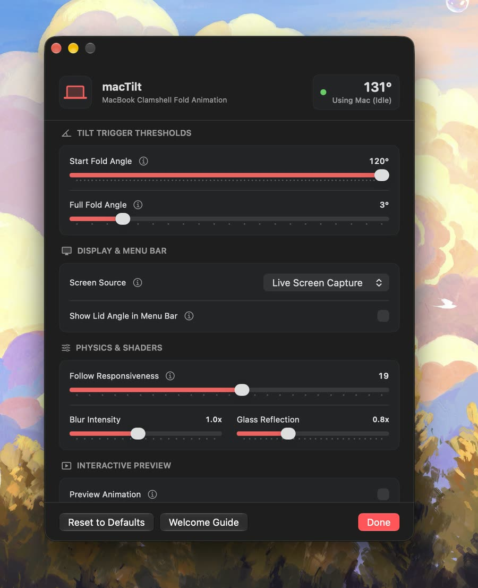

Everything is customisable.
Thresholds, display source, physics, shaders and live preview — dial it in exactly how you like it.

Thresholds, display source, physics, shaders and live preview — dial it in exactly how you like it.
No polling. Event-driven lid sensing sips power while it watches the hinge.